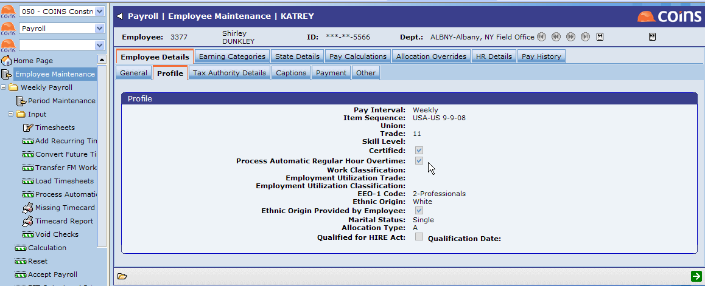
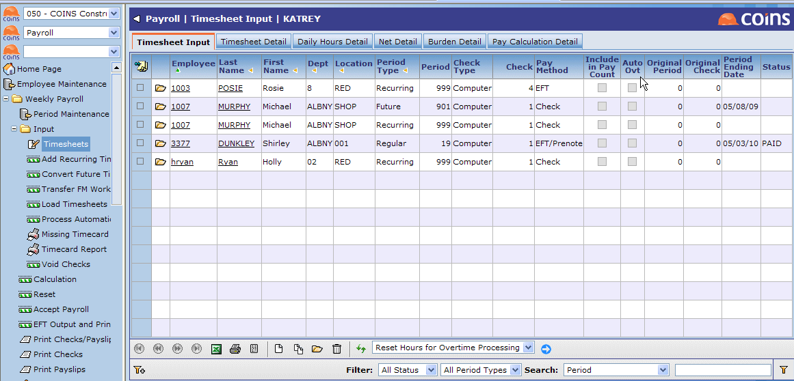
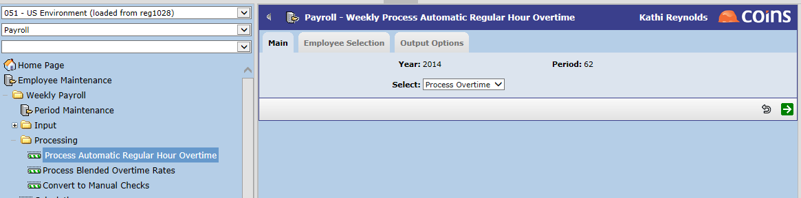
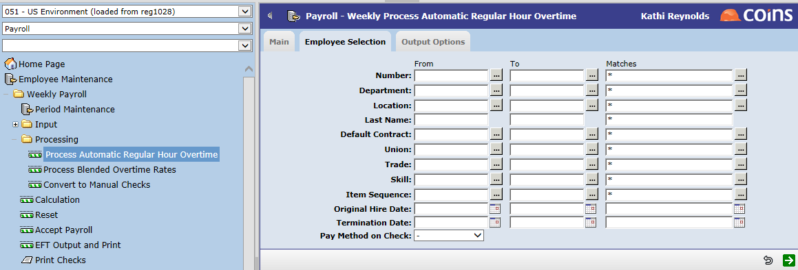
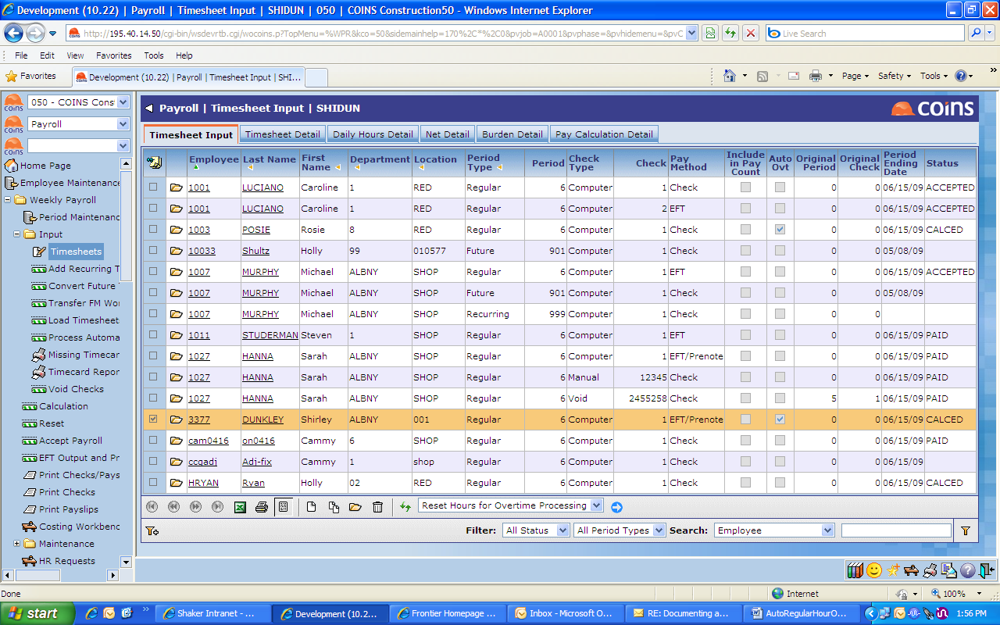
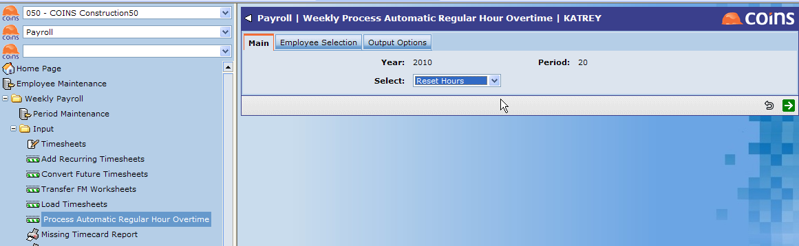
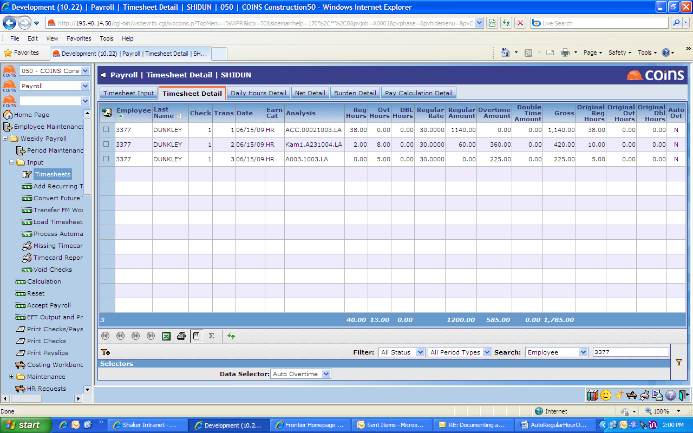
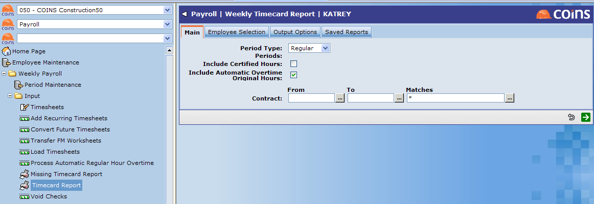

How to Set Up Automatic Regular Hour Overtime Processing:
1. Set Up
- In

Automatic Regular Hour Overtime Processing - Select one of the following options:
- No Overtime - If you select this option, the next three fields (Maximum Regular Hours, Rule for Saturday Hours, and Rule for Sunday Hours) are disabled.
- Daily Overtime
- Weekly Overtime - Spread Surplus - Spreads the overtime hours over all jobs entered during the payroll period.
- Weekly Overtime - No Spreading - Puts all overtime hours to the last job entered, and if necessary due to additional overtime hours, spreads back to subsequent jobs in the order these jobs were entered.
Maximum Regular Hours - This field is only available if Automatic Regular Hour Overtime Processing is set to any option other than No Overtime. When enabled, you can enter the maximum number of regular hours.
Rule for Saturday Hours - This field is only available if Automatic Regular Hour Overtime Processing is set to any option other than No Overtime. When enabled, you can select one of the following options:
- No Processing
- All Overtime
- All Double Time
- Follow Overtime Rules
Rule for Sunday Hours - This field is only available if Automatic Regular Hour Overtime Processing is set to any option other than No Overtime. When enabled, you can select one of the following options:
- No Processing
- All Overtime
- All Double Time
- Follow Overtime Rules
IMPORTANT: Everything from this point on will not be visible, or apply, if Automatic Regular Hour Processing in Step 1 above is set to No Overtime.
2. Set Up Employee Maintenance
Set up Employee Maintenance so that desired employees can be subject to the Automatic Regular Hour Overtime process.
- In

- In Edit mode (click
 ),
),
3. Set Up Earning Categories
Use the Earning Categoriesfunction to set up any earning categories that should be considered when processing overtime.
- In
- Go to the Main tab.

- In Edit mode (click ),
4. Check Time Sheet Entry
- In

- Check that the Auto Ovt field is displayed on the screen. This field only shows if the
NOTE
5. Process Automatic Regular Hour Overtime
After time has been input for an employee, you can run the Process Automatic Regular Hour Overtime function.
- In

- Select Process Overtime from the Select field.
- Go to the Employee Selection tab.

- Use the selection criteria to select certain employees, etc. for this function, then click Next
 .
. - Once you have submitted the task successfully, you can use the report viewer to confirm that the process was run for all selected employees.
6. Reset Hours for Overtime Processing
If overtime has already been processed for a
The Reset Hours for Overtime Processing function can be performed in two places in
- Timesheet Entry - This option allows an update for a single employee/
- Process Automatic Regular Hour Overtime - Although similar to the option in Timesheet Entry, this option allows updates for all employees, or for multiple employees you select for processing. It is not limited to one employee and
Reset Hours for Overtime for a Single Employee
Using this action allows you to update the time card and reset automatic overtime calculations for a single employee, as needed.
- In

- Select the desired employee and choose the Reset Hours for Overtime Processing action, then click
 .
.
NOTE
Reset Hours for Overtime for Multiple Employees
Using this action in Process Automatic Regular Hour Overtime allows you to update the time card and reprocess overtime for all employees, or for multiple employees you select for processing, as needed.
- In

- Select Reset Hours from the Select field.
- Go to the Employee Selection tab.
- Use the selection criteria to select certain employees, etc. for this function, then click .
- Once you have submitted the task successfully, you can use the report viewer to confirm that the process was run for all selected employees.
7. Review Automatic Regular Hour Overtime Hours
You can review the automatic regular hour overtime hours by using one of the two methods described below. Both of these methods allow you to view the regular, overtime, and double time hours and amounts, as well as the original regular, overtime, and double time hours, after the overtime process is run.
Method 1: Auto Overtime Data Selector
The first method uses the Auto Overtime option in the Data Selector field of the Timesheet Detail screen. It allows you to view the regular, overtime, and double time hours and amounts, as well as the original regular, overtime, and double time hours.
- Go to Payroll > Weekly Report > Input > Timesheets > Timesheet Detail tab.

- Select the Auto Overtime option in the Data Selector field.
Method 2: Timecard Report
The second method uses the Include Automatic Overtime Original Hours option on the Timecard Report. It allows you to view and compare original regular, overtime, and double time hours to the processed hours.
- Go to Payroll > Weekly Report > Input > Timecard Report.

- Select the Include Automatic Overtime Original Hours field.
Additional Notes
- When processing overtime, only Computer
- When processing overtime, any
- The system will only process those
- The overtime process and reset hours process cannot be run on a
- Any transactions are ignored where overtime or double time have manually been spread by the user during time card entry.
- When running the Calculation function, and the employee is set up for overtime processing, you will receive a warning if any of the entered